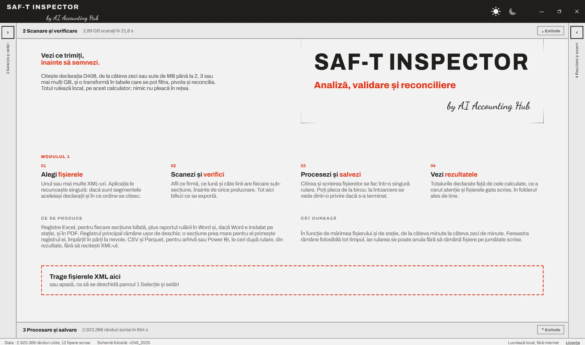
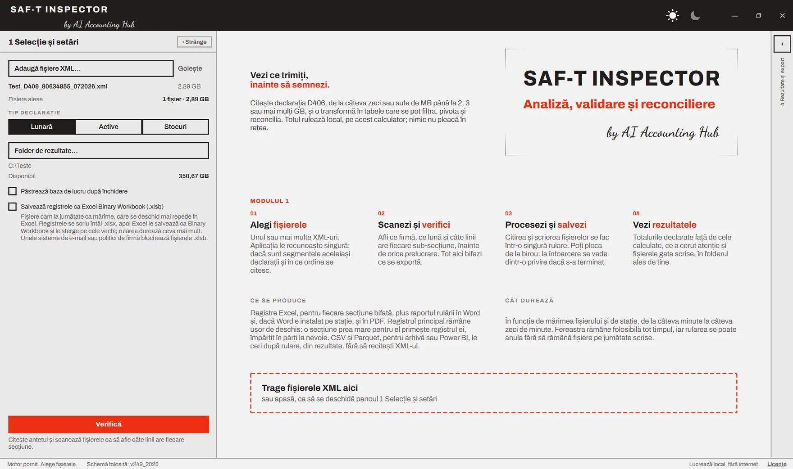
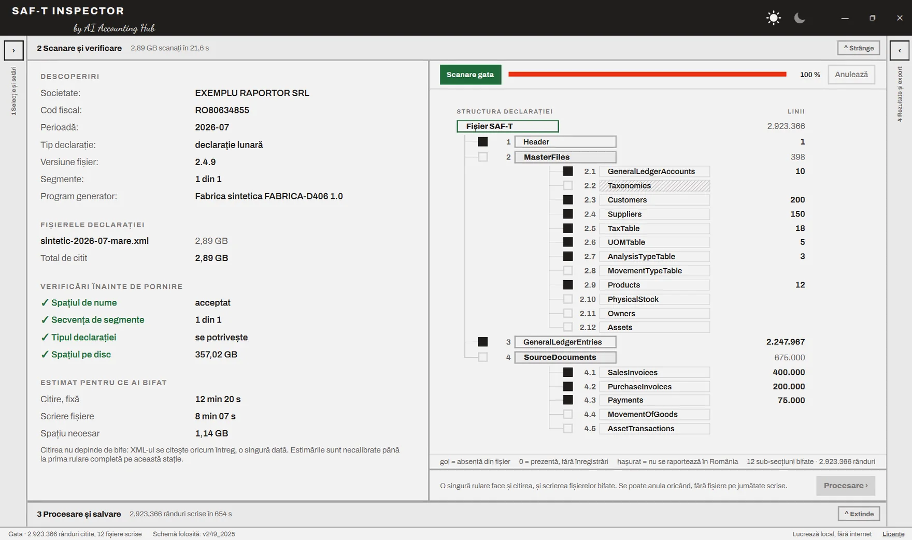
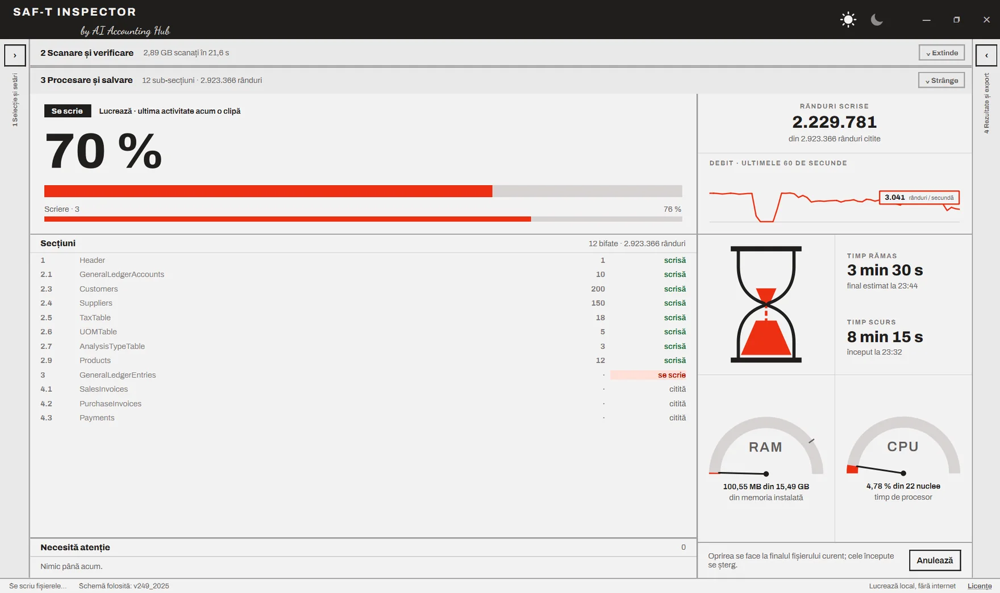
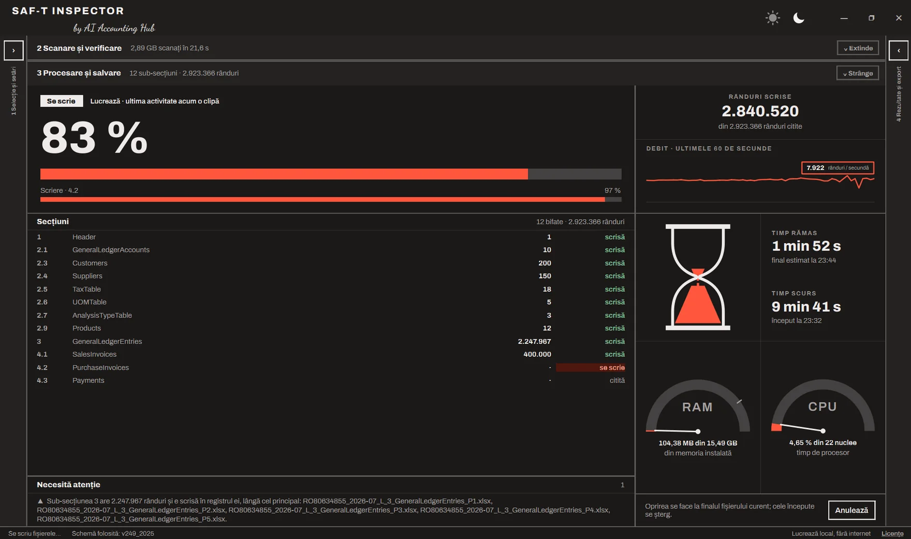
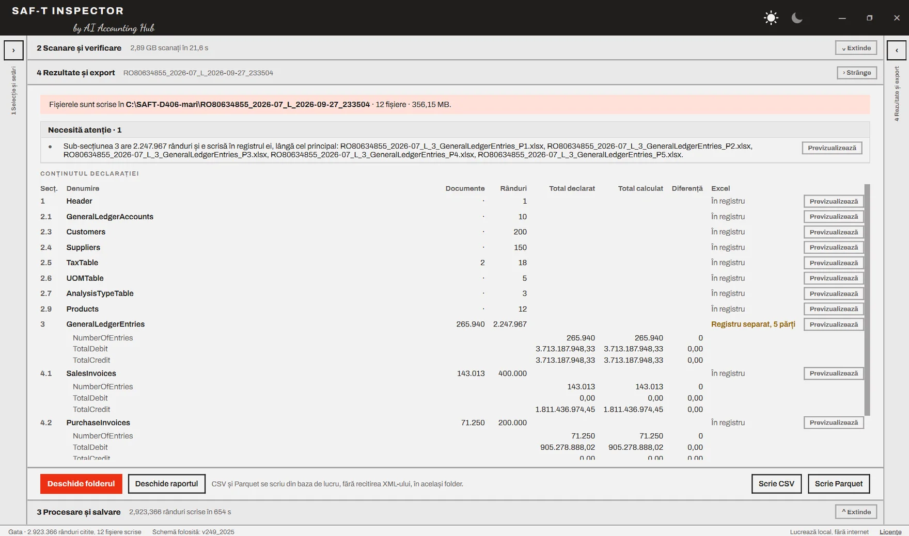
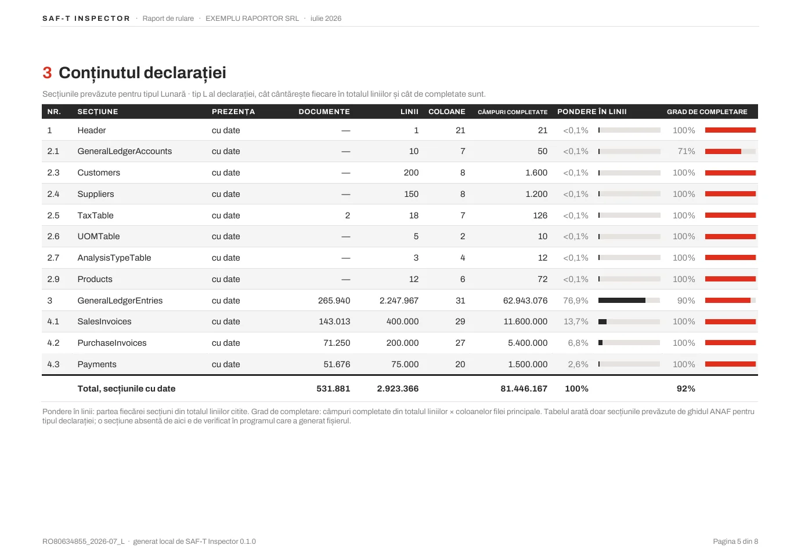
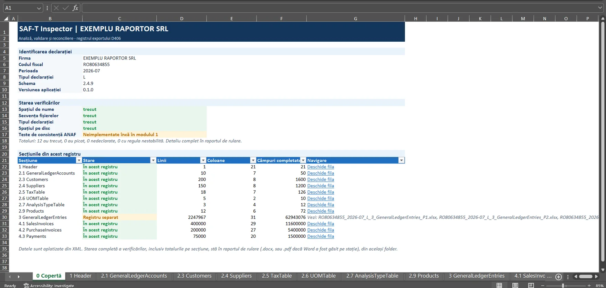
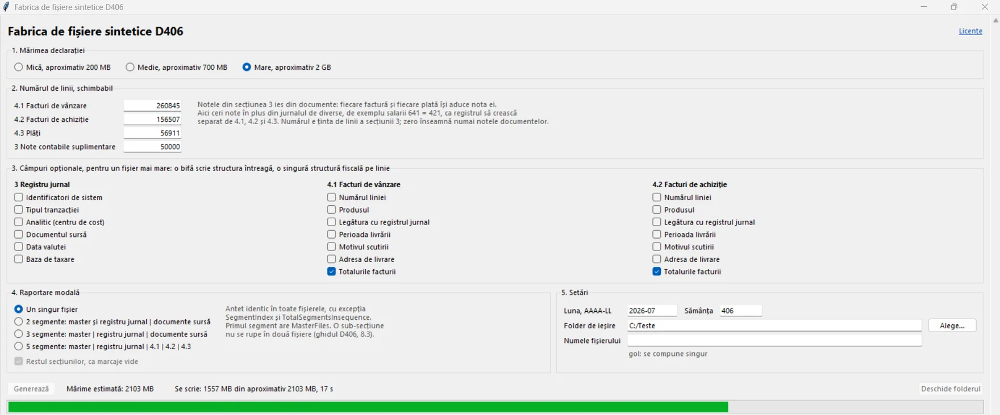

Apeși Verifică, și D406 devine Excel
Modulul 1 din SAF-T Inspector e gata. Aplicația citește declarația D406, de la câteva zeci de MB până la câțiva GB și o transformă în registre Excel, CSV și Parquet, totul pe calculatorul vostru. Mai jos găsiți o rulare completă înregistrată, fiecare ecran explicat, pe scurt cum a fost construită și cele trei pachete de descărcat.
Seria SAF-Tpartea a opta ce a fost înainte
- Două aplicații ANAF pentru SAF-T: pași corecți, dar timizi27 august 2026 · 12 min
- Cinci ani de SAF-T în România: de la standardul OCDE la declarația D40629 august 2026 · 17 min
- Cum verifici fișierul SAF-T D406 înainte de depunere30 august 2026 · 22 min
- Nu cere drumul cel mai scurt5 septembrie 2026 · 12 min
- Proiectul care ține minte5 septembrie 2026 · 12 min
- Conversația care nu a produs cod8 septembrie 2026 · 13 min
- Ultimul pas înainte de cod15 septembrie 2026 · 12 min
// Cuprins

Articolul trecut se încheia cu o aplicație care avea nume, formă și specificație, dar nicio linie de cod. Acum are și cod. Modulul 1 din SAF-T Inspector face un singur lucru deocamdată, dar îl face până la capăt: ia declarația D406 înainte să plece la ANAF și o întoarce în tabele pe care le puteți filtra, pivota și reconcilia.
Articolul e organizat ca un tur al aplicației. Întâi rularea completă, înregistrată. Apoi fiecare ecran pe rând, cu ce vedeți în el și de ce e acolo. La final, pe scurt, cum a fost construită, în ce forme o puteți descărca și ce garantează, respectiv ce nu garantează încă.
O rulare completă, înregistrată
Filmul urmărește o singură rulare, de la alegerea fișierului până la registrul deschis în Excel. Fișierul XML de transformat are aproximativ 3 GB (2,89 GB, mai exact) și este sintetic, generat cu Fabrica de fișiere prezentată mai jos. Toate cifrele din imagini, inclusiv denumirea firmei și codul fiscal, sunt inventate.
Cifrele de timp sunt orientative. Durata depinde de mărimea fișierului, de câte secțiuni bifați, de formatul ales pentru registre și de stația pe care rulează. Un fișier de câteva sute de MB se termină în câteva minute, unul de mai mulți GB poate ajunge la 10 - 15 minute, după cum se vede.
Ecranul de start
Captura din capul articolului este ecranul pe care îl vedeți la prima deschidere, înainte de orice fișier. E gândit pentru colegul care deschide aplicația fără manual: spune în patru pași ce urmează (alegi fișierele, scanezi și verifici, procesezi și salvezi, vezi rezultatele), ce se produce la final și cât durează, apoi vă lasă să trageți fișierele XML direct în zona marcată cu roșu.
Fereastra are patru panouri, numerotate în ordinea în care le folosiți. Panoul 1 stă în stânga, panoul 4 în dreapta, iar 2 și 3 sunt benzile orizontale din mijloc. Oricare se strânge sau se extinde, deci pe un monitor mic vedeți doar ce vă interesează în acel moment. Bara de jos arată tot timpul trei lucruri: starea rulării, schema folosită (v249_2025, schema oficială în vigoare) și mențiunea „Lucrează local, fără internet”.
Ultima mențiune e una de fond, nu de formă. Aplicația nu trimite nimic nicăieri. Un fișier SAF-T conține toată contabilitatea firmei, iar el nu pleacă de pe calculatorul pe care îl deschideți.
1 · Selecție și setări

Aici se pregătește rularea, în cinci mișcări:
- Adaugă fișiere XML. Unul sau mai multe. În cazul raportării modale, când declarația e transmisă în mai multe fișiere, aplicația le recunoaște singură, verifică dacă aparțin aceleiași declarații și le pune în ordine. Lângă fiecare fișier apare mărimea lui, iar după verificare și poziția în secvență, de exemplu „segment 1 din 1”.
- Tipul declarației: Lunară, Active sau Stocuri. Nu e o setare, e un control. Alegeți ce credeți că aveți în mână, iar aplicația compară cu tipul scris în antetul fișierului. Dacă nu se potrivesc, rularea nu pornește. Pare un detaliu, dar prinde exact greșeala tipică de la final de lună: fișierul corect, dar din alt folder.
- Folderul de rezultate. Aplicația arată imediat spațiul disponibil pe disc, fiindcă un fișier de 3 GB produce, între baza de lucru și registre, mai mult de un GB de date.
- Păstrează baza de lucru după închidere. Implicit, baza de lucru intermediară se șterge când închideți aplicația. Bifați doar dacă vreți să reveniți asupra aceleiași declarații fără să o mai citiți o dată.
- Salvează registrele ca Excel Binary Workbook (.xlsb). Opțiunea care merită o explicație separată.
Formatul .xlsb, pe scurt
Excel Binary Workbook e formatul binar al Excel. Conține aceleași foi și aceleași date ca un .xlsx, dar le salvează compact. Microsoft confirmă că formatul binar produce fișiere mai mici, dar nu dă un procent, fiindcă diferența depinde de conținut. În rulările noastre, pe registrele mari dintr-o declarație D406, fișierele .xlsb au ocupat cu 50-70% mai puțin spațiu pe disc și s-au deschis mai repede.
Costul e dublu. Rularea durează ceva mai mult, fiindcă registrele se scriu întâi ca .xlsx, apoi Excel le salvează în format binar și le șterge pe cele vechi, deci pe stație trebuie să existe Excel. Apoi, unele sisteme de e-mail și unele politici de firmă blochează fișierele .xlsb. Dacă registrele rămân la voi, bifa merită. Dacă pleacă pe e-mail, verificați întâi că ajung.
2 · Scanare și verificare

Scanarea e o trecere rapidă prin fișier, făcută înainte de orice prelucrare. Scopul ei e simplu: să aflați ce aveți în față înainte să așteptați zece minute.
În stânga, trei blocuri. Descoperiri: societatea, codul fiscal, perioada, tipul declarației, versiunea fișierului, numărul de segmente (fișierele unei raportări modale) și programul care a generat fișierul. Ultimul rând e mai util decât pare: când ceva arată ciudat în date, primul lucru de verificat e programul de contabilitate care le-a exportat. Verificări înainte de pornire: spațiul de nume al fișierului, secvența de segmente, potrivirea tipului declarației și spațiul pe disc. Toate patru trebuie să fie bifate cu verde. Estimat pentru ce ai bifat: cât va dura citirea, cât va dura scrierea și cât spațiu e nevoie. Estimările sunt necalibrate până la prima rulare completă pe stația respectivă, iar aplicația spune asta explicit, sub cifre.
În dreapta, structura declarației, ca un arbore: Header, MasterFiles cu cele douăsprezece sub-secțiuni, GeneralLedgerEntries și SourceDocuments cu cele cinci. Lângă fiecare, numărul de linii găsite. Legenda de sub arbore face distincția care contează: o sub-secțiune goală lipsește din fișier, una cu 0 e prezentă, dar fără înregistrări, iar una hașurată, cum e Taxonomies, nu se raportează în România. Tot aici bifați ce vreți exportat. Citirea nu depinde de bife, XML-ul se citește oricum întreg, o singură dată. Bifele decid doar ce se scrie în registre.
3 · Procesare și salvare


Panoul de procesare răspunde la o singură întrebare, cea pe care o pune oricine se întoarce la birou după o pauză: mai lucrează sau a terminat? Procentul mare se vede de la distanță, iar sub el stă faza curentă, citire sau scriere, cu bara ei proprie.
În dreapta, rândurile scrise din totalul celor citite, debitul pe ultimele 60 de secunde, timpul rămas cu ora estimată de final, timpul scurs și două indicatoare: memoria și procesorul. Indicatorul de memorie e cel mai grăitor. Pe un fișier de aproape 3 GB, aplicația a folosit în jur de 100 MB de RAM, dintr-un total de 15,49 GB. Fișierul nu se încarcă în memorie, se citește în flux, bucată cu bucată, și se scrie într-o bază de lucru pe disc. De aceea a putut fi gândită de la început pentru o stație de birou obișnuită, cu 8 GB de RAM.
În stânga, lista secțiunilor cu starea fiecăreia (în așteptare, citită, se scrie, scrisă) și caseta Necesită atenție, care se completează pe parcurs, nu abia la final. Butonul Anulează oprește rularea la finalul fișierului curent și șterge ce era început, deci nu rămân registre scrise pe jumătate, pe care cineva le-ar putea lua drept complete.
4 · Rezultate și export

Sus, banda roșie spune unde s-au scris fișierele: un folder nou, numit după codul fiscal, perioadă, tipul declarației și momentul rulării, ca două rulări să nu se suprapună niciodată. În exemplu, 12 fișiere, 356 MB.
Dedesubt, Necesită atenție. În exemplu apare o singură notă: GeneralLedgerEntries are 2.247.967 de rânduri, mai mult decât încape pe o foaie Excel (1.048.576 de rânduri), așa că a primit registrul lui, împărțit în cinci părți, lângă registrul principal. Registrul principal rămâne ușor de deschis, iar secțiunea mare nu se pierde și nici nu se trunchiază în tăcere.
Partea cea mai utilă e tabelul Conținutul declarației. Pe fiecare secțiune: câte documente, câte rânduri și unde se află în Excel. Pentru secțiunile care au totaluri de control în fișier (NumberOfEntries, TotalDebit, TotalCredit), aplicația pune alături totalul declarat, totalul recalculat din linii și diferența. În exemplu, toate diferențele sunt zero, cum e normal pentru un fișier sintetic. Pe un fișier real, aici se vede primul semnal că exportul din programul de contabilitate nu e coerent cu el însuși.
Butonul Previzualizează arată direct în aplicație, fără să porniți Excel, cel mult primele 10 rânduri ale oricărei secțiuni. E gândit doar ca să urmăriți structura: ce coloane are secțiunea și cum arată datele. Fișierul întreg se găsește în folderul de rezultate. Jos, Deschide folderul și Deschide raportul. În dreapta, Scrie CSV și Scrie Parquet. Cele două formate se cer după rulare și se scriu din baza de lucru, fără să recitiți XML-ul. CSV e pentru orice alt program, Parquet pentru arhivă sau pentru Power BI.
Raportul de rulare și registrul Excel
Fiecare rulare lasă în folder, pe lângă registre, un raport. Se scrie în Word și, dacă Word e instalat pe stație, și în PDF. Are opt pagini, de la rezumatul verificărilor până la conținutul detaliat al declarației. E documentul pe care îl atașați la dosarul lunii, ca dovadă că fișierul a fost deschis și citit înainte de depunere.

Pagina 5 e cea la care merită să vă opriți. Pe lângă rânduri și documente, arată două măsuri care nu apar nicăieri altundeva: ponderea în linii, adică cât din declarație înseamnă fiecare secțiune, și gradul de completare, adică ce parte din câmpurile posibile au fost efectiv completate. În exemplu, GeneralLedgerEntries înseamnă 76,9% din linii și are un grad de completare de 90%. Un grad de completare neobișnuit de mic pe o secțiune e, de regulă, un câmp pe care programul de contabilitate nu îl exportă.

Registrul Excel începe cu o foaie de copertă. Sus, identificarea declarației și versiunea aplicației care l-a produs. La mijloc, starea verificărilor. Un rând de aici spune deschis ce nu face încă aplicația: Teste de consistență ANAF: neimplementate încă în modulul 1. Jos, lista secțiunilor, cu numărul de linii, de coloane și de câmpuri completate, plus o legătură care deschide direct foaia fiecărei secțiuni. Pentru secțiunile mutate în registru separat, legătura trimite la fișierele respective.
Datele din foi sunt aplatizate din XML: fiecare structură repetată din fișier devine rânduri și coloane, cu numele câmpurilor din schema oficială. Se filtrează, se pivotează și se leagă cu balanța exact ca orice alt tabel Excel.
Fabrica de fișiere D406
Aplicația a fost construită și verificată fără niciun fișier XML real. Regula a fost stabilită de la începutul seriei: în discuțiile cu un asistent AI nu intră date reale de tranzacții. D406 e cazul extrem, fiindcă un fișier SAF-T conține, practic, toată contabilitatea companiei: planul de conturi, clienții și furnizorii, toate notele contabile, toate facturile. Dacă nu ați pune așa ceva într-un instrument public, nu îl puneți nici ca exemplu de test.
Fără fișiere reale, era nevoie de altceva pe care să construim și să testăm. Așa a apărut un instrument separat, Fabrica de fișiere sintetice D406. Generează declarații cu valori inventate, dar construite după schema oficială și după regulile de completare din ghidul ANAF. Nu sunt fișiere de umplutură cu o structură aproximativă. Aplicația trebuie să le trateze exact ca pe unele reale.

Fereastra are cinci blocuri:
- Mărimea declarației. Trei puncte de plecare: mică, aproximativ 200 MB; medie, aproximativ 700 MB; mare, aproximativ 2 GB.
- Numărul de linii, modificabil. Facturi de vânzare, facturi de achiziție, plăți și note contabile suplimentare din jurnalul de diverse, de exemplu salarii, 641 = 421. Notele din registrul jurnal ies din documente, fiecare factură și plată își aduce nota ei, iar cele suplimentare fac registrul să crească separat.
- Câmpuri opționale. Pe registrul jurnal și pe facturi: identificatori de sistem, tipul tranzacției, centrul de cost, documentul sursă, perioada livrării, motivul scutirii, adresa de livrare și altele. Fiecare bifă adaugă structura întreagă.
- Raportarea modală. Un singur fișier sau declarația împărțită în 2, 3 sau 5 segmente, cu antet identic în toate și fără ca o sub-secțiune să fie ruptă în două fișiere, după regula din ghidul D406.
- Setări. Luna, folderul de ieșire, numele fișierului și sămânța. Aceeași sămânță produce exact același fișier, deci un test se poate repeta identic oricând.
Cele trei mărimi sunt doar puncte de plecare. Cu mai multe înregistrări scrise de mână în blocul 2 și cu mai multe câmpuri opționale bifate, fișierul final trece de 2 GB și poate ajunge la 3-5 GB, cât aveți nevoie ca să vedeți cum se comportă o aplicație la limită. Fișierul din filmul de mai sus a ieșit exact așa, la 2,89 GB.
Fabrica se descarcă separat, mai jos. Merită luată și dacă nu folosiți SAF-T Inspector: e punctul de plecare pentru oricine vrea să-și construiască propria aplicație pe D406 fără să atingă date reale.
Cum a fost construit SAF-T Inspector, pe scurt
Tot codul aplicației SAF-T Inspector a fost scris în conversații cu Claude Opus 5.5, în proiectul de lucru descris în articolul despre spațiul de lucru, pornind de la PRD-ul tehnic. Fiecare conversație de implementare a primit specificația, iar fiecare bucată de cod a fost verificată pe criteriile de acceptare scrise înainte, pe fișiere generate de Fabrică.
Limbajul este Python. Dintre limbajele folosite în practică, e cel mai apropiat de limbajul natural: un fragment de cod se citește aproape ca o frază, deci poți urmări ce face aplicația chiar dacă nu știi să programezi. E și limbajul pe care asistenții AI îl scriu cel mai sigur, fiindcă au văzut cel mai mult cod în el, și are deja biblioteci mature pentru tot ce cere D406: XML, Excel, baze de date. Bibliotecile au fost ținute la minimum, fiindcă fiecare dependență în plus se plătește la mărimea pachetului, la timpul de pornire și la riscul de a fi blocată de antivirus:
| Componentă | La ce folosește |
|---|---|
| PySide6 | Fereastra aplicației: o aplicație desktop nativă, fără browser și fără server |
| lxml | Citirea fișierului XML în flux, bucată cu bucată, și lucrul cu schema oficială XSD |
| SQLite | Baza de lucru intermediară, pe disc, care ține milioane de rânduri fără să încarce memoria |
| XlsxWriter | Scrierea registrelor Excel, tot în flux, cu consum mic de memorie |
| DuckDB | Exportul în Parquet, direct din baza de lucru |
| python-docx | Raportul de rulare în Word |
| pywin32 | Legătura cu Word și Excel, dacă sunt instalate: raportul în PDF și registrele în .xlsb |
Nicio componentă nu are nevoie de internet și nimic nu se instalează pe stație. Totul vine în pachet.
Nu totul a mers după plan
PRD-ul a fost punctul de plecare, nu un contract bătut în cuie. Pe măsură ce codul a început să ruleze pe fișiere reale ca mărime, câteva decizii s-au răsturnat. Patru merită spuse.
- Citirea XML-ului. Specificația prevedea biblioteca standard din Python, ElementTree, fără nicio dependență în plus. Un test pe un fișier mare a blocat însă totul, așa că citirea a trecut pe lxml, o bibliotecă construită pentru fișiere XML mari, care lucrează și direct cu schema oficială.
- Raportul de rulare. Specificația cerea un raport generat direct în PDF, cu o bibliotecă dedicată, tocmai ca să nu depindă de Word. Am renunțat la ea: raportul se scrie acum în Word, un format pe care orice contabil îl poate deschide și completa, iar PDF-ul se produce din Word, atunci când Word e instalat pe stație.
- Exportul. Specificația cerea ca fiecare rulare să producă obligatoriu toate cele trei formate: Excel, CSV și Parquet. După primele rulări ne-am dat seama că ieșeau prea multe fișiere, iar cele mai multe nu erau deschise niciodată. Acum registrele Excel se scriu la rulare, iar CSV și Parquet au butoanele lor, separate. Sunt utile pentru prelucrări ulterioare, în alte programe sau în Power BI, iar când ai nevoie de ele le generezi dintr-un click, din baza de lucru.
- Pornirea. Specificația avea un singur buton START și o fereastră în trei zone. Am ales să extindem pașii: întâi Verifică, apoi Procesare, în patru panouri. Motivul e că vrem să vedem cât mai mult din proces și să avem cât mai multe opțiuni înainte de prelucrare. De aici vine și structura declarației afișată ca arbore, exact în ordinea din ghidul ANAF, ca să rămânem tot timpul conectați la formatul și la structura declarației.
Mai e un lucru pe care specificația nu avea cum să-l rezolve dinainte: mare parte din partea vizuală și din mișcarea aplicației, adică ce vezi pe ecran, în ce ordine și cum reacționează fereastra, s-a putut ajusta abia după teste reale. Nu dintr-o singură cerere, ci prin multe iterații cu asistentul AI: rulezi, te uiți, spui ce nu merge, rulezi din nou.
Asta e, de fapt, partea cea mai utilă din tot procesul: specificația nu te scutește de surprize, dar îți spune exact ce anume s-a schimbat și de ce, în loc să descoperi abia la final că aplicația face altceva decât credeai.
Un fișier sau un folder
Aplicația trebuia să circule între calculatoare fără instalări de limbaj sau de programe ajutătoare, iar mediile de lucru diferă. De aceea există în două forme, cu același conținut:
| Un singur fișier | Folder | |
|---|---|---|
| Ce descărcați | .zip de 39,6 MB, cu un singur .exe de 39,8 MB | .zip de 54,2 MB, care se dezarhivează în 141,7 MB |
| Puncte forte | Un singur fișier de mutat sau de trimis, nimic de despachetat, bun pentru „copiez și rulez” | Pornește repede; componentele sunt la vedere, deci o excludere în antivirus sau o verificare a conținutului e ușoară |
| Puncte slabe | Se despachetează la fiecare pornire în folderul temporar, deci pornește mai încet; e oprit mai des de antivirus și poate fi blocat pe stațiile cu politici stricte | Un folder întreg de mutat; cineva poate șterge din greșeală fișiere din el |
| Când o alegeți | Transfer rapid între calculatoare, demonstrații, folosire ocazională | Folosire zilnică, stații cu restricții |
În varianta folder, aplicația se pornește din SAF-T Inspector.exe, aflat direct în folderul principal. Subfolderul componente nu se atinge.
Înainte de descărcare, un avertisment. Riscul ca aplicația să fie blocată de antivirus sau de politicile de securitate ale firmei este destul de mare, pentru că executabilele nu sunt semnate digital. Am analizat opțiunile de semnare, dar implică niște costuri care depășesc bugetul acestui proiect. Oricum, speranța noastră este ca fiecare cititor care depune declarația să-și fi construit deja propria aplicație, urmând pas cu pas ce am scris în articolele seriei.
Concret, la prima pornire Windows poate afișa ecranul albastru SmartScreen, „Windows a protejat PC-ul”. Nu e un semn că fișierul e infectat, ci doar că Windows nu îl cunoaște încă. Apăsați Mai multe informații, apoi Rulați oricum. Pe stațiile administrate de departamentul IT, butonul poate lipsi; atunci e nevoie de o excepție de la administrator, iar varianta folder se aprobă de obicei mai ușor.
Descărcare
Ce garantează programul, pe scurt. Modulul 1 este implementat, adică face ce spune specificația, și verificat, adică a trecut criteriile de acceptare pe fișiere sintetice, de la câteva sute de MB până la aproape 3 GB. Pasul al treilea, calibrarea, îl face fiecare pe fișierele lui: rulați aplicația pe o lună deja depusă și acceptată, apoi comparați ce vedeți cu ce știți din contabilitate, înainte să vă bazați pe ea într-o lună nouă.
SAF-T Inspector 0.1.0 și Fabrica de fișiere D406
Trei pachete .zip, pentru Windows. Se dezarhivează și se rulează, fără instalare și fără internet.
Versiunea 0.1.0, pe schema v249_2025. Implementat și verificat pe date sintetice. Calibrarea se face de fiecare utilizator, pe o lună proprie deja depusă și acceptată.
Ce urmează
Modulul 1 deschide fișierul și îl pune pe masă. Nu spune încă dacă ce e în el e corect. Asta e treaba modulului 2: cele 33 de teste de consistență publicate de ANAF, rulate local, pe același fișier, cu aceeași regulă ca până acum: dacă rezultatul nostru diferă de cel al aplicației oficiale, presupunerea de pornire e că noi greșim. Rândul care spune astăzi „neimplementate încă” pe coperta registrului se va schimba atunci.
Un lucru trebuie spus limpede. Scopul seriei SAF-T nu a fost să vă dăm o aplicație, ci să arătăm drumul, pas cu pas, de la documentele oficiale până la un program care rulează. SAF-T Inspector se poate descărca strict ca exemplu de rezultat al pașilor descriși în articolele anterioare, nu ca produs cu asistență.
Dacă ați construit-o și vreți să o prezentați într-un articol separat aici, pe site, scrieți-ne intenția prin formularul de contact.